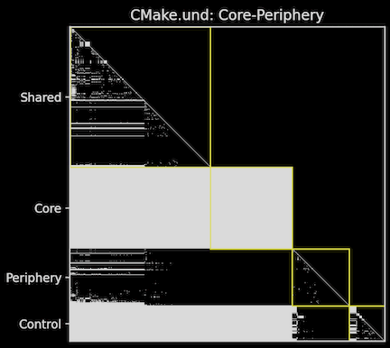
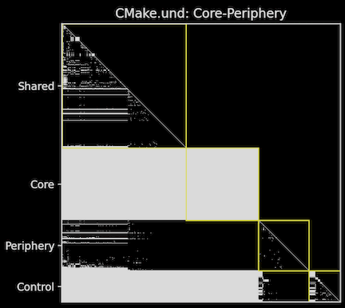

アーキテクチャ
グラフ・チャート
インタラクティブ レポート
メトリクス
ソリューション: Git
ソリューション: HIS メトリクス


ソリューション: 共有変数の可視化
ソリューション: プロジェクト品質

アーキテクチャ |
グラフ・チャート |
インタラクティブ レポート |
| ファイルをグループ化して依存関係やメトリクスを計算し、グラフを作成し、エンティティにタグを付けます。 More | カスタムグラフやチャートを作成します。 More | グラフ、表、ツリー、見出しを組み合わせて、エクスポート可能なドキュメントを作成します。 More |
メトリクス |
ソリューション: Git |
ソリューション: HIS メトリクス |
| カスタムメトリクスを計算してエクスポート、並べ替え、色分けをします。 More | 作成者や日付にアクセスし、頻繁にアクティブなファイル、カップリング、少数のコントリビューターから技術的負債を見つけます。 More | Hersteller Initiative Software（HIS）メトリクスを用いて、コード品質を担保します。 More |
|
|
|
ソリューション: 共有変数の可視化 |
ソリューション: プロジェクト品質 |
|
| 複数の呼び出しツリーからアクセスされるグローバル変数を見つけます。 More | 研究論文に基づいてプロジェクトを評価します。 More | |
 |